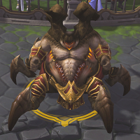
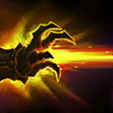
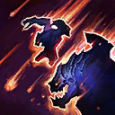
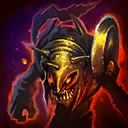
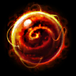
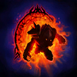
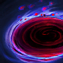

Azmodan
Welcome to our Azmodan guide for Heroes of the Storm. Here you will learn everything you need to know in order to play Azmodan in a competitive environment, whether you play on your own or with a team.
All Shall Burn Build
| Level 1 | Level 4 | Level 7 | Level 10 | Level 13 | Level 16 | Level 20 |
|---|---|---|---|---|---|---|
|  |  |  |
All Shall Burn Icon All Shall Burn Build is the quintessential split-pushing build. It seeks to capitalise upon Azmodan's ridiculous efficiency at taking down Structures and strong dueling potential to constantly create Map pressure. The main concept behind the build is objective trading; by creating such a threatening sieging presence, you seek to either effortlessly take down opposing Forts and Keeps to generate an Experience advantage, or to attract the attention of two or more players so that your teammates get to play their game with a Player advantage. This build can provide some reasonable team fight presence granted your opponents do not have a reliable way of interrupting All Shall Burn, especially after March of Sin Icon March of Sin and Infused Power Icon Infused Power have been acquired.
Taste For Blood Build
| Level 1 | Level 4 | Level 7 | Level 10 | Level 13 | Level 16 | Level 20 |
|---|---|---|---|---|---|---|
|  |  |  |
Taste for Blood Icon Taste for Blood Build is a unique late-game strategy that revolves around building up the damage of Globe Of Annihilation Icon Globe Of Annihilation to preposterous level through the use of the aforementioned Talent and Black Pool Icon Black Pool. This build's uncommon play style requires the coordination of Azmodan and his teammates to "stack up" Globe Of Annihilation's damage by allowing it to last-hit Minions. As such, most of Azmodan's early to mid-game time ends up being invested spending time in lane to rack up said stacks over one or, optimally, two different lanes. The build's main advantages are excellent long-range waveclear and the potential of creating a win condition in Azmodan himself — assuming you can reach an acceptable amount of Taste for Blood stacks before being overwhelmed, that is.
Go Back